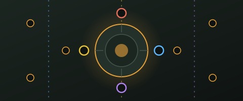
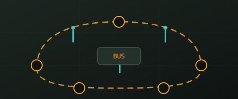

Call of Duty · Zombies
Step-by-step walkthroughs you can actually follow while you are playing. No prior knowledge of the map assumed, no scrolling through a wall of text to find the one thing you forgot.
Pick a map

Origins
Build and upgrade all four elemental staffs, break the seal, survive ten Panzersoldats and free Samantha. Split across four players so nothing waits its turn.
Open the guide →

TranZit
The Maxis and Richtofen paths side by side, with the Jet Gun, the Navcard Table, the pylon and the Avogadro, plus a searchable part-location reference.
Open the guide →
Mob of the Dead, Buried, Der Eisendrache and the rest are open for contribution. The format
is a self-contained folder under guides/<game>/<map>/.
Each guide lives in its own folder with an index.html, a stylesheet, a small
script and hand-drawn SVG diagrams. Nothing is built or bundled, so you can open the file
directly in a browser and start editing.
Run the whole site locally with
python3 -m http.server 8080 from the repository root.